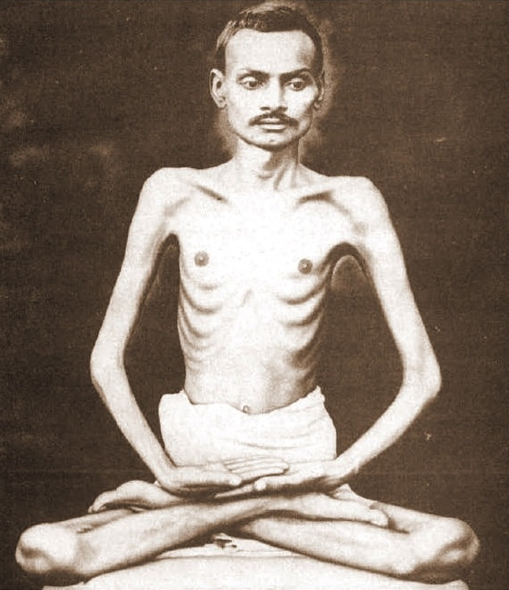
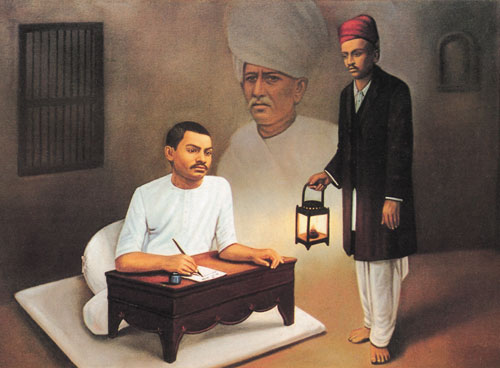
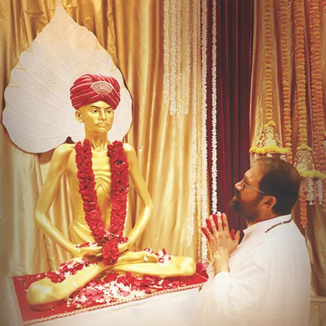

About Shrimad Rajchandraji
Lord Mahavir and Shrimad Rajchandraji
Over 2500 years ago, Lord Mahavir, the 24th Jain Tirthankara attained nirvana. Since then, many Enlightened Souls have carried forward His legacy. Over 150 years ago, Shrimad Rajchandraji, a self-realised saint scaled great spiritual heights and demystified the path to self-discovery.
“When the religious practices happen with an intended purpose, that alone is the path beneficial to one’s self. To be devoid of mind’s thoughts of volition and irresolution, that is the path of Mahavir.”

Shrimad Rajchandraji
The Great Spiritual Luminary
Shrimad Rajchandraji was a visionary who laid the foundations of spirituality for a new era. An Enlightened Being who lived in the supreme state of soul consciousness. A genius who inked the path of liberation in His powerful writings. He was a self-realised saint, a reformer of Jainism, and a remarkable poet-philosopher of the late 19th century.
Honoured as Yugpurush, He gave the world a rich heritage that continues to guide generations of seekers, in a short span of 34 years. His life and works are an invitation to turn within and discover the eternal truths.
Literary Works
Simple, precise, and yet immensely profound – Shrimadji’s literary works are an expression of His supreme inner state. Laying down a clear and complete path to spiritual living, one read is enough to answer existential questions, while every next read takes you deeper, until neither the questioner nor question remains. From the vast archives of His philosophical literature, the crown jewel is Shri Atmasiddhi Shastra, a 142-verse poetic masterpiece.

Shrimadji and Gandhiji

Honoured as the spiritual guide of Mahatma Gandhi, Shrimad Rajchandraji had a tremendous and formative influence on the Father of the Nation.
“Such was the man who captivated my heart in religious matters as no other man has till now.”
‘Yugpurush – Mahatma na Mahatma’ is a captivating theatrical representation of the special bond between Shrimad Rajchandraji and Mahatma Gandhi. With 1000+ shows in seven languages, the play’s one-year journey garnered awards and accolades, moving lakhs worldwide.
Pujya Gurudevshri on Shrimad Rajchandraji
“If I am asked to give a brief introduction of Shrimadji, I would say that Shrimad Rajchandra means an invitation to turn within. This invitation card has just two words – Shrimad Rajchandra. But the moment it is received, one feels inspired to connect with the self.”
“Shrimad Rajchandraji is not just a historic event, it is an existence absorbed in the stream of eternal consciousness. Shrimad Rajchandraji is not this outer frame, it is consciousness revelling in the state beyond the body.”
